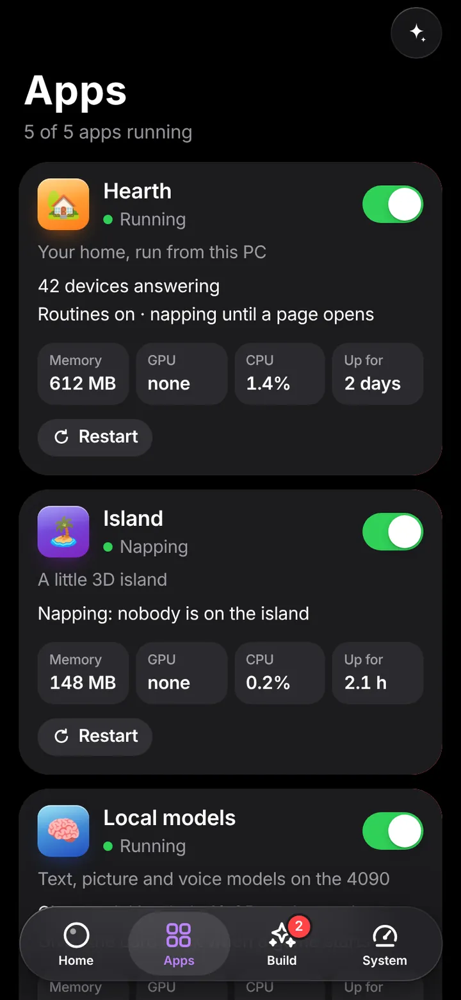
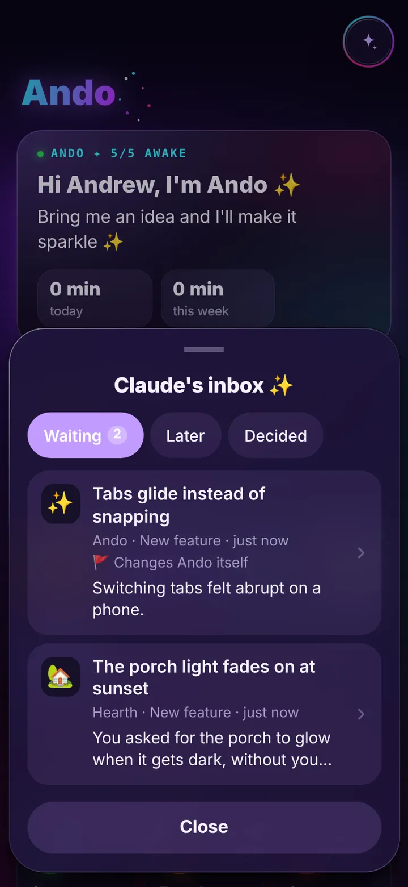

What my phone shows
content hash working it out
A passkey for this demo is being made in your browser.
What the gate checks
- idlePress Approve to run the checks.
One page on my phone that starts, stops and watches every app on my PC, keeps each of them private to me, and makes sure nothing new ships to them without my say-so.
The code is private, so here is the real page running against a test copy with invented apps.
Approving a proposal from the phone. The home screen says two things are waiting. Opening one shows what it does, a picture of it and the files it touches. Ship it asks for Face ID, the passkey check runs on the PC, and the page confirms.




By October 2026 I had a handful of self-hosted apps on one PC. Each had its own port and its own way of starting, several wanted the same graphics card, and I could only reach them from my home Wi-Fi.
I wanted three things: one place to run and watch them all, a way to reach them from anywhere without opening anything to the internet, and a hard stop between “an AI agent built a feature” and “that feature is running on my PC.”
Every app I run also has to follow the same house rules, and Ando is where most of them are enforced:
A request from my phone passes three checks before it reaches an app. Each app listens on the PC only, so the doors are the one way in.
Two more ways in exist, and both are fenced off from that path. Guests get a separate door on a separate port. Claude’s night worker gets an inbox it can only drop proposals into.
Starting or stopping an app takes a custom header, a same-origin fetch, an allowed origin and a key only Ando’s own page is handed: an HttpOnly, SameSite=Strict cookie that is new every time Ando starts.
Another app’s server can be talked into fetching an address with any headers it is given. It cannot send a cookie it was never handed. The door simulation lets you try each case.
When Claude builds a feature I did not ask for, on a night shift or from my idea shelf, it goes on a branch and a proposal lands in an inbox. I see what it is, why, what it changes and a picture, then say yes with Face ID. Bug fixes, and things I asked for directly, skip the queue.
I wanted an agent that can take the initiative, without handing it the keys. A yes is a passkey signature over a hash of exactly what I was shown, so a proposal that changes after I open it is refused. The gate simulation runs that check for real.
The WebAuthn verifier is a strict CBOR reader, DER parsing and P-256 ECDSA, with no third-party library anywhere in the approval path.
Every check is a line that can be read, and there is nothing extra to install or trust on the way to a yes. It is tested against the RFCs’ own examples and against bytes a real browser produced.
Adding a passkey, approving a proposal and removing a passkey all have to arrive through Tailscale from a device that is not the PC. The page on the PC says to use the phone.
A program on the PC can forge any header, and the agent’s worker runs on that PC. If the PC could approve, the gate would be decoration.
Overnight, Claude Code can work in its own Linux sandbox: a separate WSL install with no route to my network, an allowlist proxy as its only way out, a system-call filter, and a second locked-down user that judges what it produced.
It runs unattended on a machine full of my things. It can reach the code host and the few sites it needs, and nothing near home.
I can share one app with someone for an hour or a month. A guest link opens one app at one permission level through a separate door, which is the only public thing Ando ever turns on, and only while a link is live. Keys are kept as hashes.
Sharing should never touch my own way in. Ending a link cuts off even a tab that is already open.
Tapping a push notification opens the right app at the right page, but the notification carries no address.
An address would let any web page or message open one of my apps at a page of its choosing, with that app’s cookies. A review caught this before it shipped.
Both simulations below run in your browser with invented data. They follow the same rules, in the same order, as the Python they are modelled on. Nothing you do here leaves the page.
content hash working it out
A passkey for this demo is being made in your browser.
The request, as Ando receives it
A hole the review found. The first version of the sandbox read a night’s verdict from the worker’s own run. A fake git planted earlier on the worker’s PATH could have slipped a protected file past it. A separate security review caught it. The verdict is now read by a second user with a fixed PATH and nobody’s files but its own, and a test plants that fake git on every run.
Ando is Python, and my professional work is Java. The problems are the same ones:
I built Ando with Claude Code, Anthropic’s coding agent. I set the requirements, the house rules and the priorities, and I approve what ships. Claude wrote the code and the tests. Several Claude sessions work on it, and the git repo is the only way they stay in step: start from the repo, change, test, commit, push, then deploy exactly what was pushed.
The whole workflow is written up here.
Hearth, the home hub Mochi, the 3D island How I build All projects